Service Design
Focus on the pain points, needs and insights of the content consumers and creators.


As the COVID-19 pandemic continued, home cooking and meal kits became two of the fastest-growing markets. Unable to go out, people cooked at home and shared their meals with others.
A home-cooked meal was no longer simply a convenient way to eat. It became a way to enjoy a beautiful, delicious meal, feel that life was going well, and express oneself.
Although demand for home-cooked food continued to grow, no service treated it as its primary market.
We set out to build a social commerce platform that begins with a community for home-cooking content and enables users to purchase featured products directly from that content.


Focus on the pain points, needs and insights of the content consumers and creators.
Focus on how to fit the needs of content consumers and creators.
Conducting tests for improving the usability.
We conducted separate user research for content creators and consumers. To understand consumer behavior and needs, we held in-depth interviews with 14 people who followed more than 30 home-cooking accounts.
We structured the interviews in an Affinity Diagram to identify shared patterns and needs. This revealed insights into content exposure and structure, communication culture, and search behavior, allowing us to distinguish exploration-driven and goal-driven consumers.
Goal-driven consumers experienced more friction while finding and using information. Because their goals closely aligned with the business objective, we analyzed their experience in greater depth.
Journey maps for “finding a menu” and “discovering a new product” showed that, even after discovering interesting content, users still struggled to locate the exact product or recipe information they wanted.

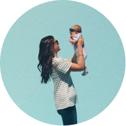
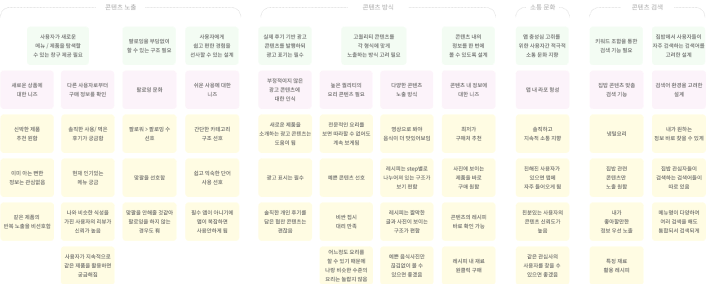
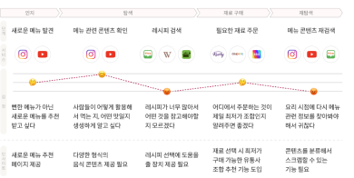
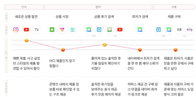

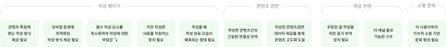

“I want something new beyond the same menus and ingredients.”
Deciding what to eat every day is difficult.
Searching for food information is tedious.
The true lowest price is hard to identify.
Leftover ingredients need to be used quickly.
Discover trending ingredients.
Open recipes for unfamiliar dishes immediately.
Buy ingredients at the lowest price.
Find recipes using ingredients already at home.
“This table brings back
the moment.”
Connect comfortably with people who share an interest in home cooking.
See cutlery details easily and buy at the lowest price.
“Reactions to my table
make me proud.”
Use a structure that makes information easy to share.
Write quickly and conveniently with structured templates.
Analyzed publishing pages from existing channels
using heuristic evaluation criteria.
(Intuitive) Simple, photo-led publishing
(Useful) Easy photo editing and a clear flow
(User control) Photos cannot be edited after publishing
(Intuitive) Published posts differ from the writing view
(Aesthetic) Tight line spacing reduces readability
To understand creators’ motivations and needs throughout the publishing process, we conducted in-depth interviews with six home-cooking content creators.
We organized the interviews in an Affinity Diagram and identified two primary creator types: record keepers and information providers. Record keepers valued documenting their tables and connecting with people who shared their interests, while information providers published useful content or created posts for commercial purposes. Both groups needed structured templates and easier ways to share information.
We also reviewed existing publishing tools using heuristic evaluation criteria. Photo-led publishing and editing flows worked well, but creators could not revise images after publishing, and the final post often differed from the writing screen.
These findings shaped a purpose-driven writing experience that supports quick photo records, structured information sharing, and continued motivation through reactions and conversation.
Created wireframes for both user-facing and admin screens in Figma.

Products in a photo display both the brand and product name and link to the lowest-price retailer when selected. The long-term business model was designed to support purchases directly in the app. Selecting a food marker opens its recipe: the creator’s linked recipe when available, or the search results for that dish otherwise.
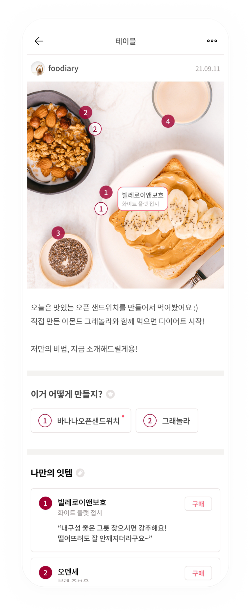
Search for “carbonara”
Add search term “spinach”
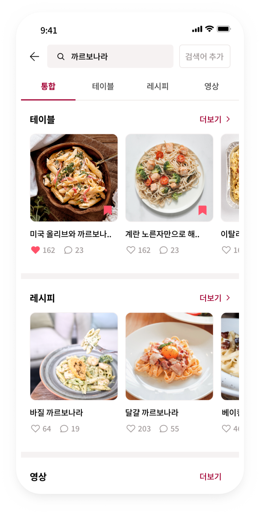
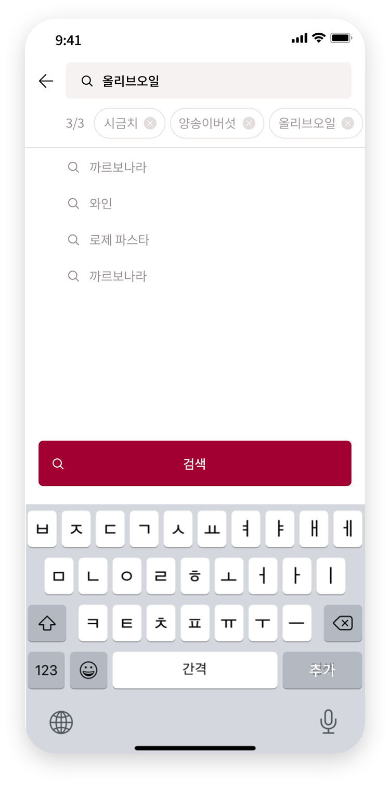
Searching for a dish shows community posts, recipes, and videos. Posts the user previously liked or saved appear first, making familiar content easier to find and encouraging continued use of saves. To address the difficulty of deciding what to cook with ingredients already at home, users can combine search terms and find recipes that use a specific ingredient in the dish they want.
The writing page mirrors the published result so creators can preview their content. Users also found features difficult to learn when they were split across multiple pages, so the tools available while writing were placed directly above the keyboard for immediate use.
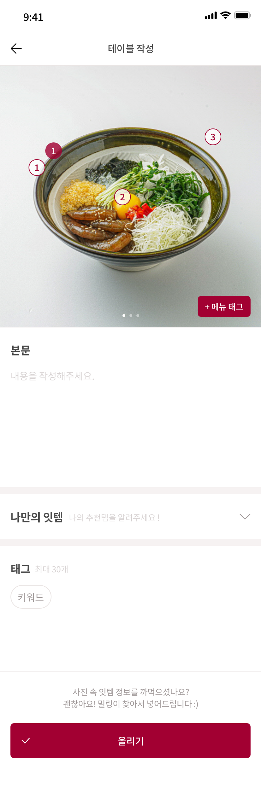
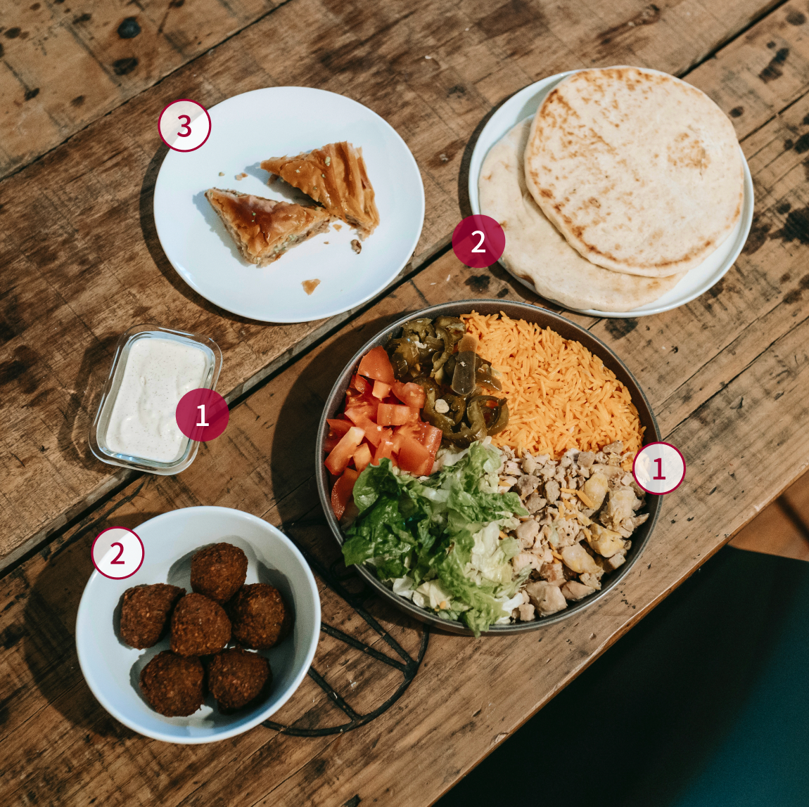
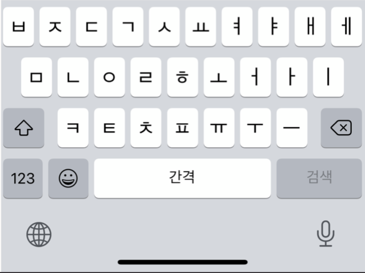
The writing page mirrors the published result so creators can preview their content. Users also found features difficult to learn when they were split across multiple pages, so the tools available while writing were placed directly above the keyboard for immediate use.
Continuous usability testing with target users and active customers
Interested in home cooking but not yet familiar with the app
Highly engaged with home cooking, using the app at least twice a week with prior publishing experience
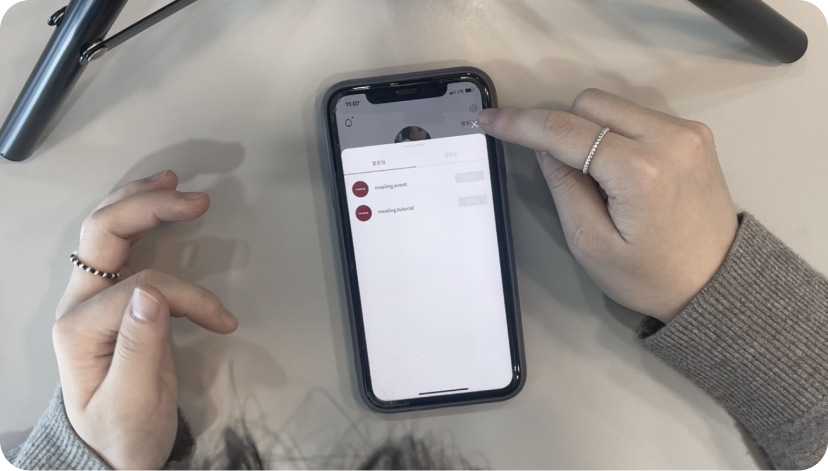
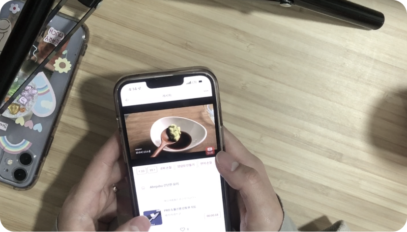
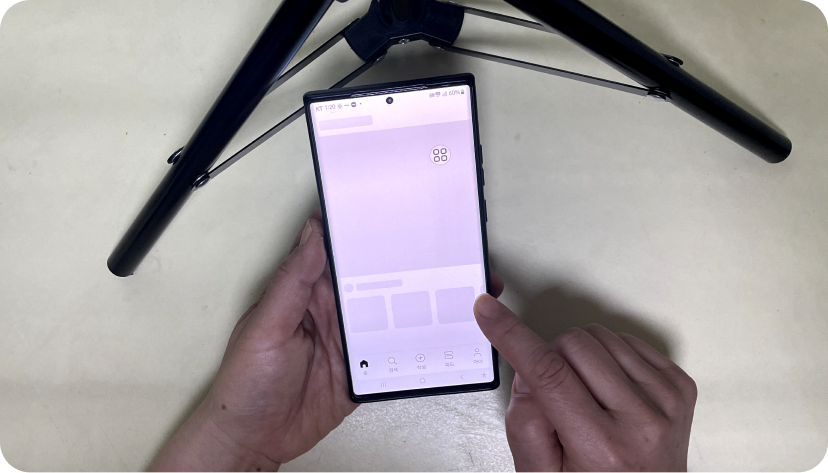
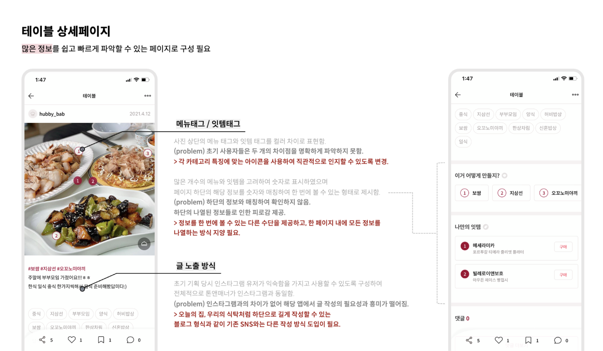
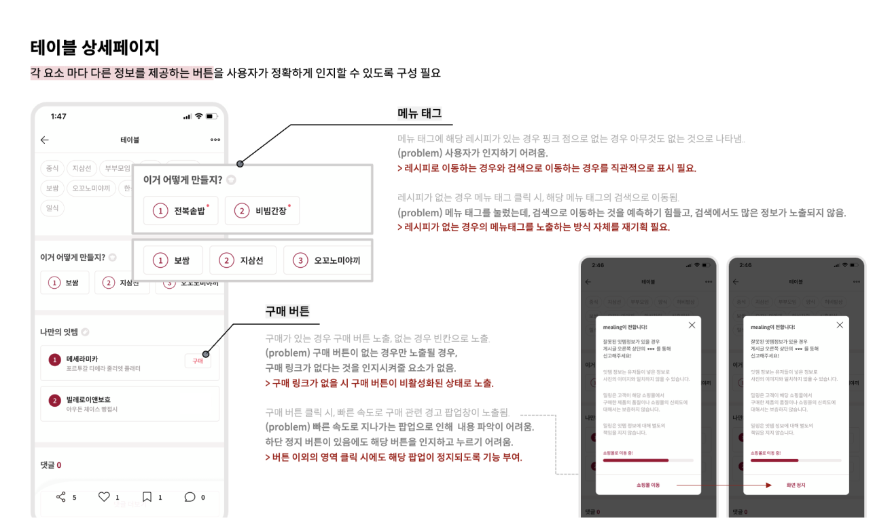
Continuous usability testing with target users and active customers
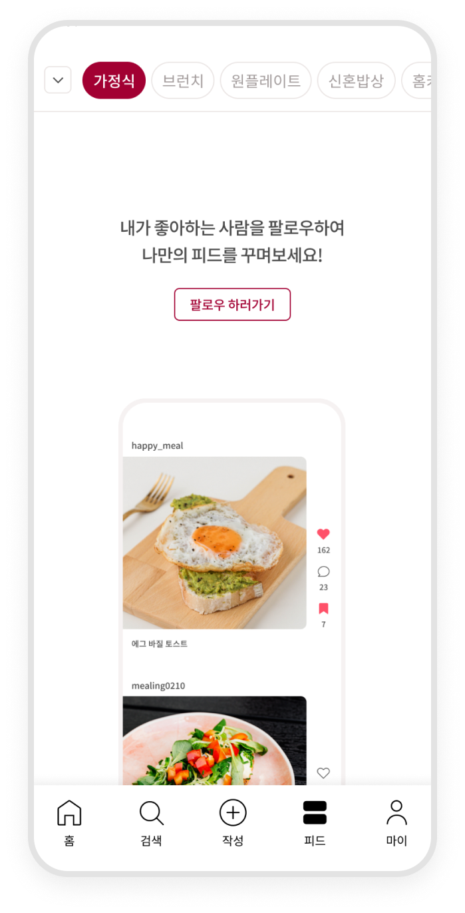
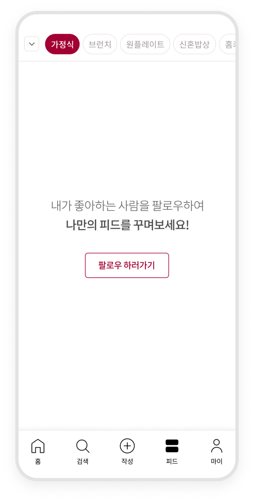
Tested CTA placement with Firebase
to guide users toward following.
Click-through rate increased 2.25×